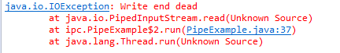

UNIX 为实现这样的进程间通信 提供了多种技术。一些技术提供同一主机上的进程间通信，其他技术可以实现主机到主机的信息交换。另外，各种技术的速度不同，所以必须选择最合适自己需求的技术。还必须进行协调（实施时间控制和排他控制）。例如，如果一个应用程序产生数据，另一个应用程序消费数据，那么当读完共享池时消费者必须停下来等待生产者。另一方面，如果消费者无法足够快地读取池，生产者必须慢下来或暂停。
表 1 总结在典型的 UNIX 系统上可用的进程间通信形式。
| 名称 | 说明 | 范围 | 用途 |
|---|---|---|---|
| 文件 | 在典型的 UNIX 文件中读写数据。任意数量的进程都可以互操作。 | 本地 | 共享大数据集 |
| 管道 | 使用专用的文件描述符在两个进程之间传输数据。通信只在父进程和子进程之间进行。 | 本地 | 简单的数据共享，比如生产者和消费者 |
| 命名管道 | 通过专用的文件描述符在进程之间交换数据。通信可以在同一主机上的任意两个对等进程之间进行。 | 本地 | 生产者和消费者或命令-控制，比如 MySQL 和它的命令行查询工具 |
| 信号 | 通过中断通知应用程序某一情况。 | 本地 | 无法在信号中传输数据，所以信号主要用于进程管理 |
| 共享内存 | 通过在同一内存段中读写数据共享信息。 | 本地 | 任何类型的协作，尤其适合需要安全性的情况 |
| 套接字 | 完成特殊的设置过程之后，使用一般的输入/输出操作传输数据。 | 本地或远程 | FTP、ssh 和 Apache Web Server 等网络服务 |
管道
管道的相关概念
操作系统中的管道是linux支持的最初的Unix IPC 形式之一，且具有以下特点
- 管道是半双工的，数据只能向一个方向流动；需要双方通信时，需要建立两个管道。
- 只能用于父子进程或是兄弟进程之间的通信（具有亲缘关系的进程）
- 单独构成一个独立的文件系统：管道对于管道两端的进程而言，就是一个文件，但是他不是普通的文件，它不属于某种文件系统，而是自立门户，单独构成一种文件系统，并且只存在内存中。
- 数据的读出和写入：一个进程向管道中写的内容被管道另一端的进程读出。写入的内容每次都添加在管道缓冲区的末尾，并且每次都是从缓冲区的头部读出数据。
管道注意的点
Java 中的管道
操作系统中默认的管道是进程间的通信当时，但是在java中，管道是进程内线程之间的通信方式。这是java中的管道和操作系统中的管道的最大的区别。

如果是在同一个线程中去使用java中的管道还会引起引起死锁，主要的原因就是java中申请的管道默认最大为1k即1024B.当缓冲区满，并且写还没写完的时候，就会阻塞。直至等待读，但此时因为在同一个线程，读也被阻塞。所以，就会造成死锁。详细请看文章 Java里的管道输入流PipedInputStream与管道输出流 PipedOutputStream
1 | package ipc; |
共享内存
请参考此文章:对话 UNIX: 通过共享内存进行进程间通信